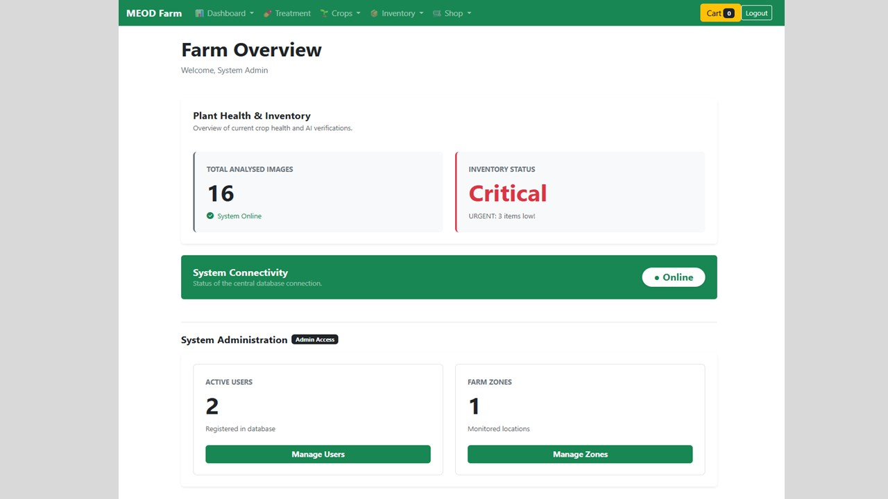
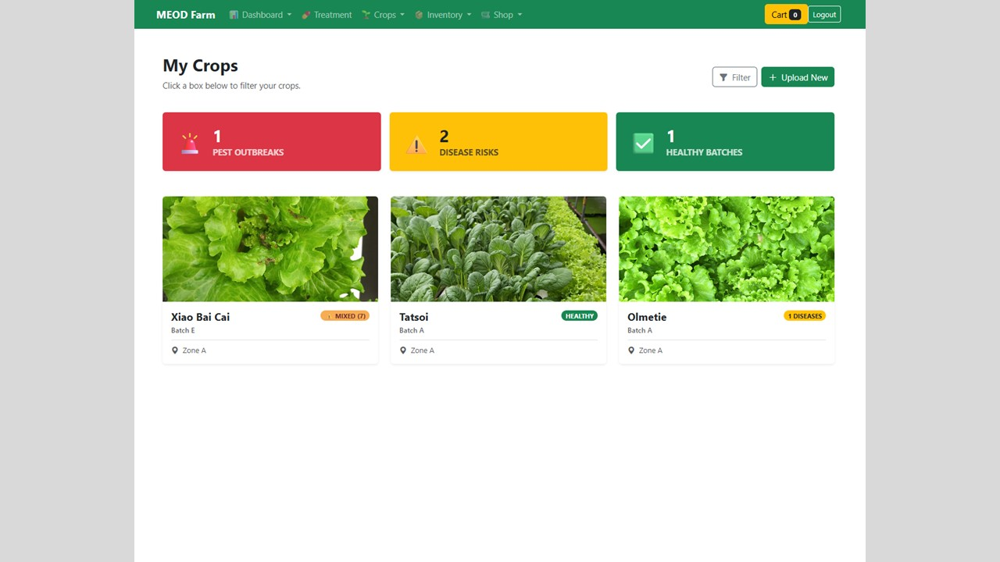
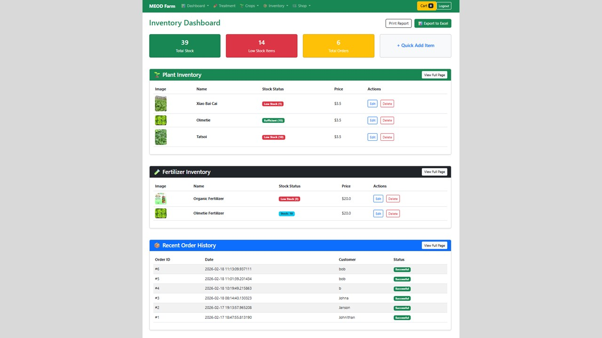

Web Project: Meod Farm Dashboard
Custom web dashboard built to monitor and manage operational metrics for a vegetable farming company.
ClientMeod Farm
FormatWeb Application
FocusVegetable Farming Metrics
RoleWeb Developer
What it is
A web-based dashboard interface designed to track critical farming data, such as crop yields, environmental metrics, and inventory levels.
My role
Developed the front-end layout and integrated data visualizations to ensure the interface was intuitive, clean, and responsive for the end-users.
Outcome
Delivered an accessible web application that streamlines how the farm monitors its daily operations and vegetable production.